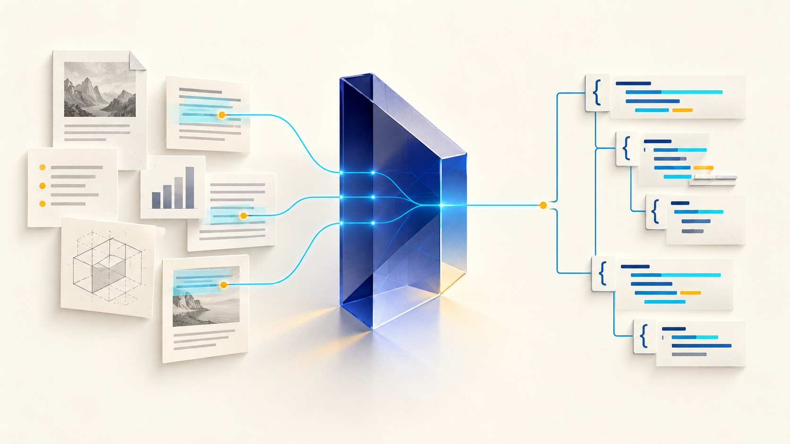

RAG 文档检索与代码生成
两项核心能力并列展示：检索回答带来源，代码生成提供完整可检查的草稿。
文档与模型均在本机处理

ZEBAO-RAG · LOCAL AI WORKSPACE
资料问题找依据，开发需求看代码
RAG 展示检索回答与原文来源；本地模型按需求生成 Python 代码。两条链路各自独立。
Image2 概念视觉 · 非实时结果
⌕RAG 文档检索与问答
检索本地资料，回答可以回到原文
Embedding · Chroma
问题向量化›召回相关片段›引用回答
基于检索证据的回答本地资料 · 静态样例
文档分块能把资料整理成便于检索的知识片段，同时保留标题和上下文。块太短会丢失上下文，块太长则容易混入多个主题。[1][2]
[1] 分块取舍02-数据处理与分块.md块太短：上下文不完整；块太长：主题混杂、语义变钝。
[2] 标题与滑窗02-数据处理与分块.md按 Markdown 标题切分，超长内容再使用带重叠的滑窗。
{ }本地代码生成
输入功能需求，查看可复制的 Python 代码
Ollama · Mellum2.1
描述需求›本地 Mellum›Python 代码
生成的 Python 代码health.py · 18 行
1from datetime import UTC, datetime
2from typing import Literal
3
4from fastapi import FastAPI
5from pydantic import BaseModel
6
7app = FastAPI()
8
9class HealthStatus(BaseModel):
10 status: Literal["ok"]
11 time_utc: datetime
12
13@app.get("/health", response_model=HealthStatus)
14def health_check() -> HealthStatus:
15 return HealthStatus(
16 status="ok",
17 time_utc=datetime.now(UTC),
18 )
ⓘ 两项结果均为静态原型样例；页面不会实时调用 Chroma 或 Ollama。
本地知识库
查看文档来源、隔离集合与索引构建方式，让 RAG 的资料入口也清晰可见。
当前项目方式 文档放在配置目录，由 CLI 分块、编码并重建对应集合。下面是 README 中的验证记录快照，不是实时读取结果；网页导入与在线建库还没有实现。
技术笔记tech
zebao_multimodal
32条索引
24 文本块 · 8 图片
个人资料personal
zebao_personal
8条索引
3 文本块 · 5 图片
日语学习japanese
zebao_japanese
174条索引
纯文本块
技术文档来源data/docs/ · Markdown
5 个文件 · 快照
MD00-学习索引.md已记录
MD01-RAG基本概念.md已记录
MD02-数据处理与分块.md已记录
MD03-检索与生成流程.md已记录
MD04-效果评估与迭代.md已记录
日语文档来源data/japanese/docs/ · 整理后的 Markdown
文件名示例MD日语五十音快速记忆法.md已记录
MD日语基础语法完整版.md已记录
●个人集合的文件名与内容在此隐藏，避免在总览中暴露私密资料。
从本地文档里找答案
检索证据，再生成回答；每个结论都能回到原文。
LOCAL KNOWLEDGE · GROUNDED ANSWERS
让资料里的依据看得见
本地向量检索，展示召回片段与来源；没有找到时明确说明。
Image2 概念视觉 · 不代表真实召回内容
回答与检索依据
演示样例 · 静态原型 / 检索链路只读
文档分块是为了把资料拆成适合检索的知识片段，同时尽量保留标题和上下文。
块太短，上下文不完整，检索命中后也可能无法回答；块太长，会混入多个主题，让向量语义变钝并占用更多上下文。项目先按 Markdown 标题切分，超长内容再用滑窗处理。[1][2]
检索到回答的链路
1问题向量化›2Top-k 召回›3证据组装›4本地生成
●只读检索 · 不改动文档和向量库 · 资料未命中时会拒答
本地代码生成
描述要实现的功能，查看 Mellum 生成的完整代码草稿并复制使用。
▣独立模式 不读取 RAG 知识库，不访问或修改本地项目文件。
模型只有文本输入与输出能力；生成结果需要你检查后再使用。
Ollama · Mellum2.1 Thinking
任务描述本机 Ollama
需求最多 4000 个字符0 / 4000
如果问题需要资料依据？
生成的 Python 代码演示样例 · 静态原型
Py health.py · 本地模型草稿
1from datetime import UTC, datetime
2from typing import Literal
3
4from fastapi import FastAPI
5from pydantic import BaseModel
6
7app = FastAPI()
8
9class HealthStatus(BaseModel):
10 status: Literal["ok"]
11 time_utc: datetime
12
13@app.get("/health", response_model=HealthStatus)
14def health_check() -> HealthStatus:
15 return HealthStatus(
16 status="ok",
17 time_utc=datetime.now(UTC),
18 )⚠ 代码由本地模型生成，尚未运行或测试；请检查后再使用。
Mellum2.1 Thinking上下文 8192 tokens生成上限 4096 tokens超时 300 秒
效果评估
分别观察检索与生成，保留失败样例，避免一个指标遮住链路问题。
检索与生成分开评估
当前原型重点展示问答检索与本地代码生成。评估指标页只作为规划入口，真实数据需以当前命令运行结果为准。